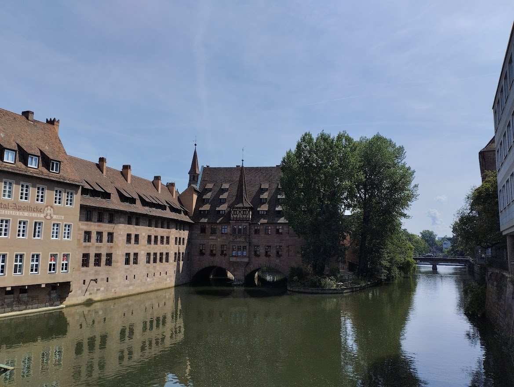
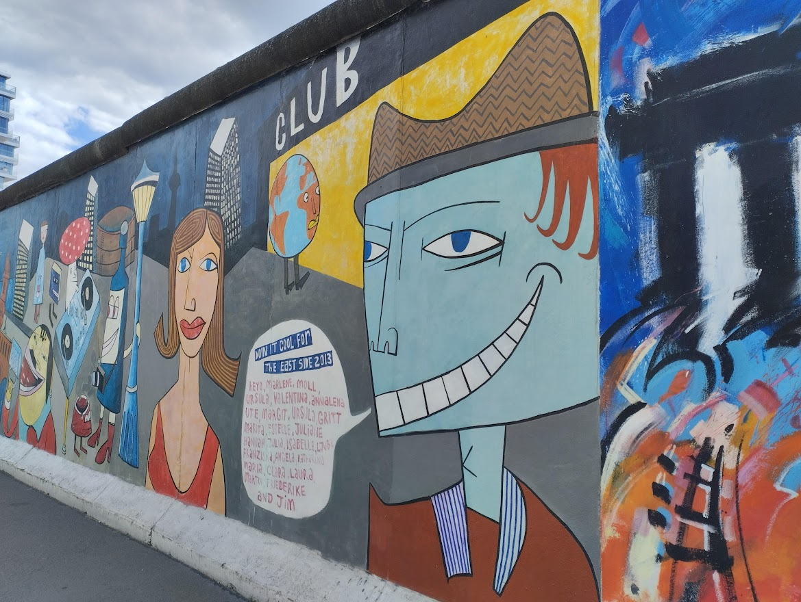
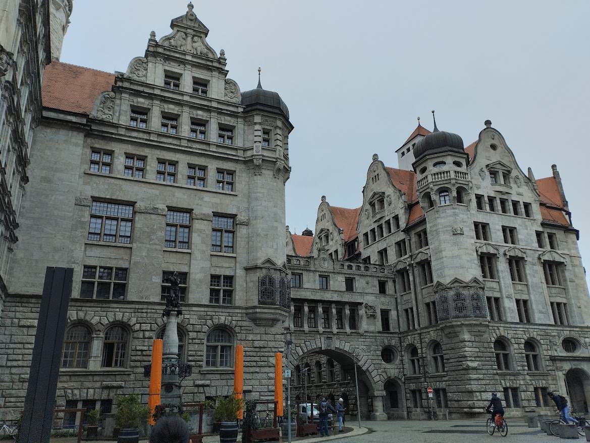

Привіт! Мене зовуть Оксана
Трішки про мене
Мені 37 років, маю маленьку доньку.Я з Харківської області. В минулому метеоролог. Колись HTML, CSS почала вивчати самостійно, щоб доказати одній знайомій людині, що дівчина яка зовсім не дружить з компютером, також може творити чудо. Знайшовши книгу автора Джон Дакетт я почала вчитися. Це стало моїм хобі. Потім відвідувала курс однієї чудової школи, де мене також багато чому навчили, але це було давно і я вже багато забула. Зараз я хочу оновити свої здобутті вже знання і навчитися чомусь новому і сучасному, хочу своє хобі перетворити в професію.
Галерея
  Сині кити
Смугач великий або си́ній кит (Balaenoptera musculus) — вид ссавців родини смугачеві (Balaenopteridae), підряду китовидих, або «вусатих китів» (Mysticeti). Синій кит, можливо, найбільша тварина, яка коли-небудь існувала на Землі. Постраждав і далі потерпає через китобійний промисел, через що популяція синіх китів дуже мала.
У синього кита величезне, струнке і витягнуте тіло завдовжки 21—27 м вага від 84 т і більше в дорослої особини.
Про китів більше тут...